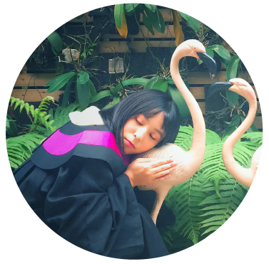

Shih-Ting (Amy) Lin
A Rational Interaction Designer
Hey there, it's Shih-Ting!
My name is Shih-Ting but I go by Amy. I'm a rational interaction designer with a diverse background, including 4-year training in economics, Chinese-English translation and interpreation, in addition to design. I enjoy seeing the world from various points of view and synthesize them into my design.
Currently, I'm a Master's Student at the University of Michigan, focusing on HCI and looking for summer internship. Feel free to check out my resume or shoot me an email if you're interested in being impressed. I'm always happy to chat!
Fields I Specialized in:
Interaction Design / Incentive Design / Visual Design / Prototyping / Contextual Inquiry / Content Strategies / Marketing (B2B) / Localization / Interpretation (Consecutive & Simultaneous)
Things I'd Love to Do:
Brainstorming / Public Speaking / Sketching / Dancing
Constantly Learning:
Programming (Python/Java/HTML/CSS) / Experimental & Behavioral Economics / UX Design & Research / Cooking Great Food